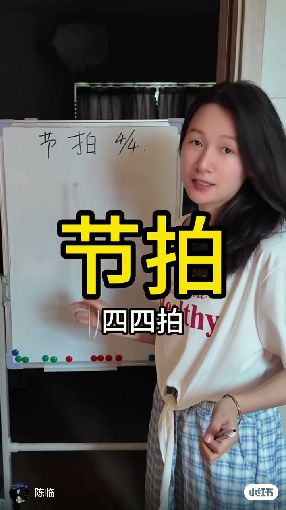
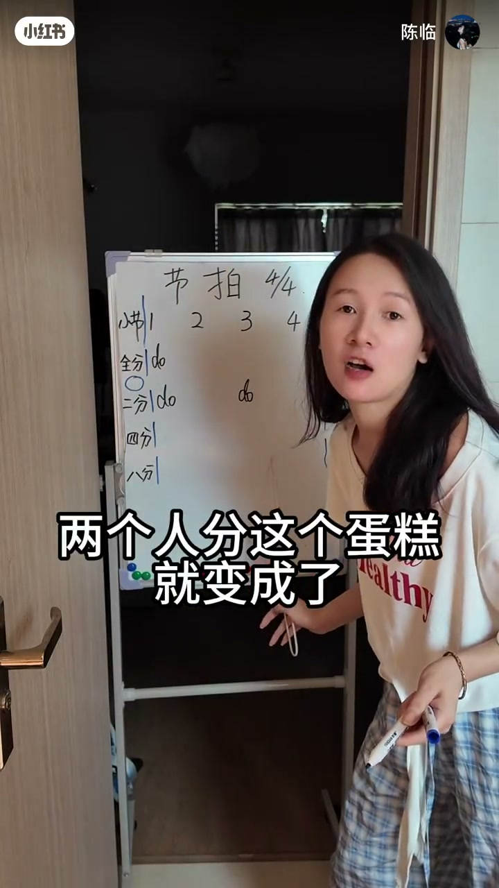
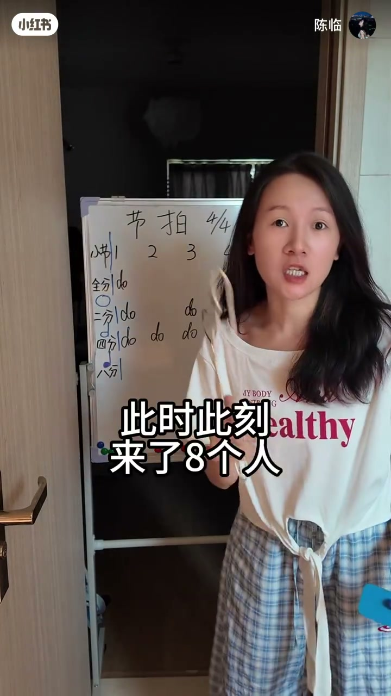
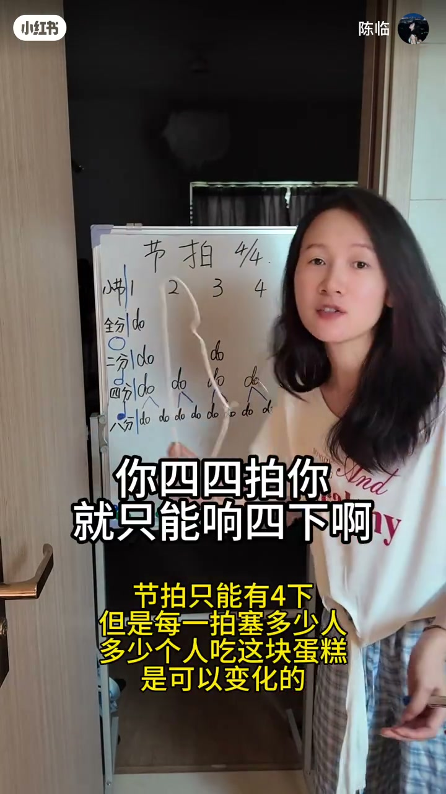
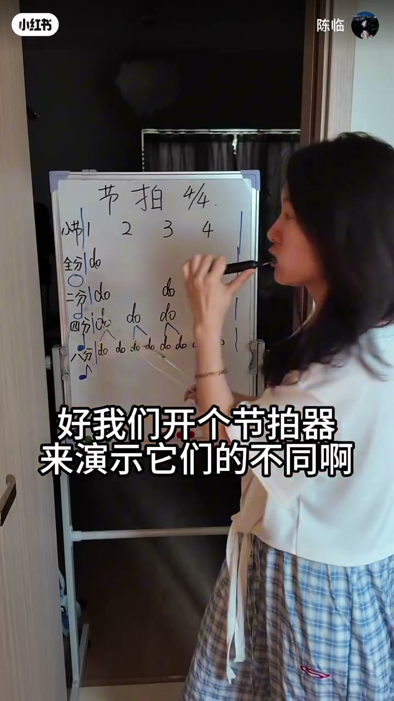

内容要点
知识结构
[00:00→00:40]
立题4/4
课程主题：节拍、四四拍；白板写「节拍」并列出全分到八分。
[00:40→01:40]
蛋糕隐喻
蛋糕先分给四个人，再变两人、八人——对应每拍可塞的音符密度变化。
[01:40→02:30]
只响四下
四四拍只能想四下；拍数不变，变的是每拍里「多少人吃蛋糕」。
[02:30→02:49]
八分切一刀+节拍器
八分图腾像四分加符头一刀；开节拍器演示疏密不同。
总结
4/4的「拍」数固定为四；音符时值决定每拍塞多密，八分=四分再对半切。
中段口播ASR残缺；白板与字幕是主要证据。十六/三十二分仅见笔记作业提问，片内未展开。
图文实录
开场：节拍与4/4
00:00 – 00:40
白板标题「节拍」，口播「来今天的课程是节拍四四拍」。列出全分、二分、四分、八分，建立后续对照表的行标签。
来今天的课程是节拍四四拍

[00:02] 开场：来今天的课程是节拍
Opening: today's lesson is about beat
[00:25] 蛋糕隐喻：这块蛋糕本来说分给四个人
Cake metaphor: this cake was meant for four people
白板表：1 2 3 4 怎么塞音符
00:40 – 01:40
白板升级为「节拍 4/4」，顶行1 2 3 4。全分行一个do跨满小节；二分在1与3；四分每拍一个do；八分开始每拍两人。字幕用「两个人分这个蛋糕」「此时来了8个人」把疏密讲成人人分蛋糕。

[00:59] 表格：两个人分这个蛋糕就变成了二分密度
Chart: two people sharing the cake becomes half-note density

[01:33] 此时来了8个人：八分行开始加密
Now eight people arrive: the eighth-note row densifies
拍数固定，密度可变
01:40 – 02:30
强调：「你四四拍你就只能想四下啊」「那就不是四四拍了」。黄字补充：节拍只能有4下，但每一拍塞多少人、多少人吃这块蛋糕，是可以变化的。把「拍」与「音符时值」拆开，避免把越唱越碎听成换拍号。
你四四拍你就只能想四下啊
那就不是四四拍了
四四拍你只想四下

[02:06] 关键：四四拍只能响四下；变的是每拍人数
Key: 4/4 only strikes four times; what changes is people per beat
八分怎么认 + 节拍器
02:30 – 02:49
问八分图腾与四分很像、区别在哪——「在他头上切一刀」「切成八分」。然后「好我们开个节拍器来演示他的不同」。片尾随口吐槽刷牙算账，作业文案另留十六分/三十二分思考题。
在他头上切一刀
切成八分
好我们开个节拍器

[02:32] 演示前：开节拍器听全分到八分的疏密
Before demo: start a metronome to hear whole-to-eighth spacing